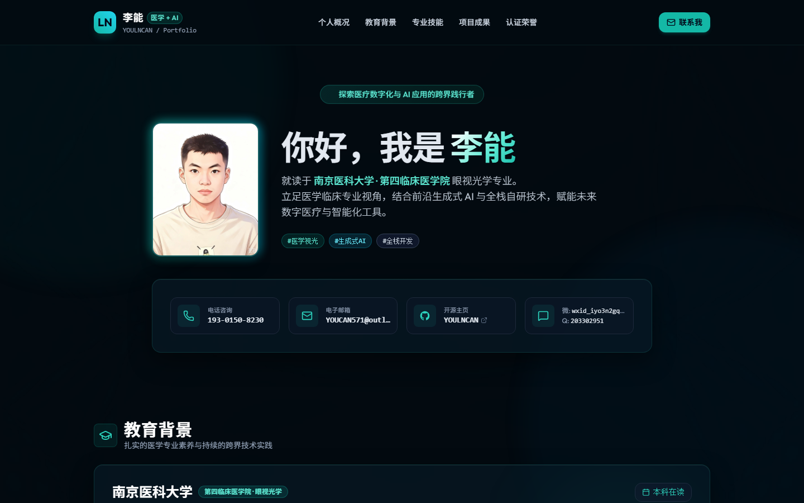
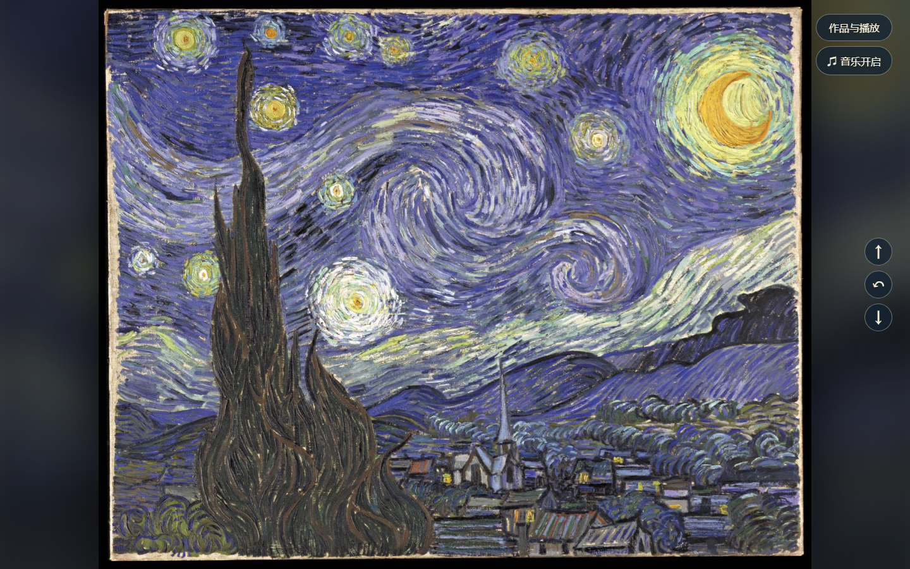
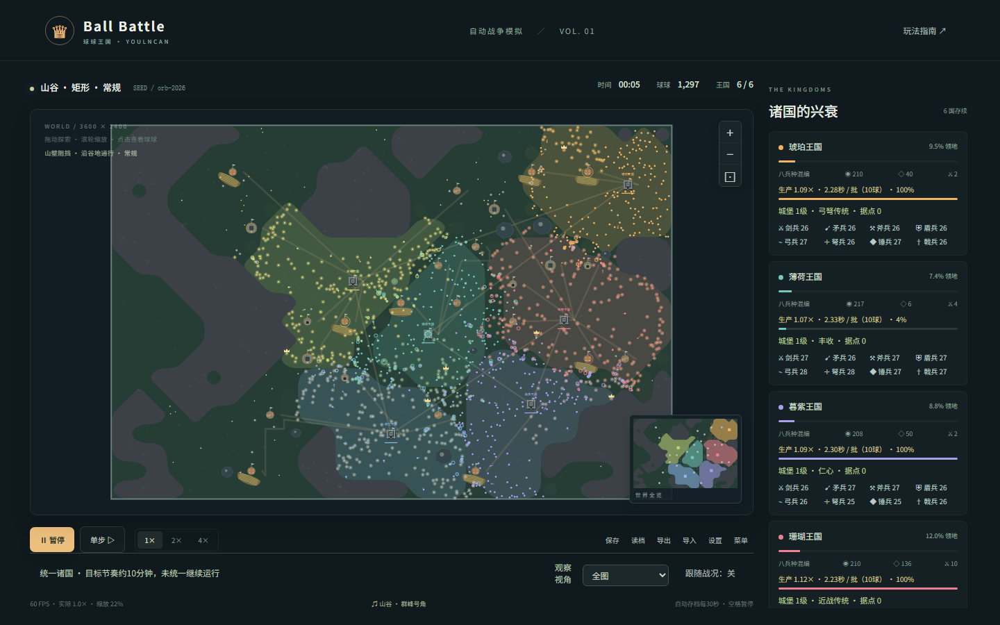

PLAY / 操作与反馈
打开作品 射击游戏
关卡推进、操作交互与状态反馈，
把玩法设想落实到可操作的作品。
乐创盟技术部申请 · 李能
眼视光学的专业背景，AI应用的实践兴趣。
用可以打开、操作和展示的结果，回应学习。


视觉 × 交互 ↗
玩法 × 模拟 ↗从高三暑假开始自学AI与网页搭建。
用可展示的作品检验学习。
第四临床医学院 · 眼视光学
先明确任务与期望产出，再根据实际效果选择工具。
持续检查结果，并结合需求提出修改。
从高三暑假开始自学AI与网页搭建。
每一步，都对应一个具体产出。
以个人简历网站为例：把个人信息、作品和认证集中展示，方便对方了解与查看。
集中展示个人信息、作品和学习认证，让查看路径更加清楚。
梳理栏目与页面顺序，借助AI完成前端实现，再检查移动端、加载与分享路径。
形成可以访问与分享的网页，并根据实际表现继续完善。
明确目标 · 整理内容 · 提出修改 · 推进测试与部署
AI辅助页面与代码实现借助AI辅助实现，通过测试继续调整。
关注操作、反馈与运行过程。
关卡推进、操作交互与状态反馈，
把玩法设想落实到可操作的作品。
多王国自动战争模拟与演化，
通过运行过程观察战局变化。
从玩法想法到实现，再通过实际运行与操作继续修改。
围绕主题组织画面与交互，
把创意转成可展示的网页体验。
结合画作展示、播放与操作，
探索视觉欣赏与网页交互的结合。
通过个性化输入组织节日祝福，
让画面主题与参与过程相连接。
关注信息如何被看见，以及观众如何参与其中。
已有尝试与下一步计划，分阶段呈现。
先确定服务对象和具体任务。
整理需要的信息和期望的结果。
用具体示例检查表现，记录需要完善的部分。
围绕具体需求推进，逐步完善场景、输入输出和测试。
五组九宫格 · 共45个镜头
目前处于分镜展示阶段
重点展示镜头顺序，以及人物、场景的衔接；后续继续完善。
点击任一图片查看原图六张代表性证书 · 点击查看原图
覆盖AI编程、Prompt、RAG、智能体与视觉生成
课程与平台认证补充学习投入，实践作品体现应用尝试。
希望参与的工作与拟交付内容。
根据部门实际需求逐步承担。
拟交付：活动介绍页、作品展示页。
把已有网页搭建实践用于清楚的信息展示。拟交付：围绕具体需求的小型演示原型。
先明确使用场景，再通过测试继续完善。拟交付：项目演示PPT、作品截图与说明。
整理展示内容，让阶段成果便于查看和交流。拟交付：操作步骤、常见问题与复盘笔记。
结合具体作品记录方法，方便交流与复用。计划每周投入约8小时。
实际分配可随任务调整。
核对课程、考试与任务截止时间，
把工作拆成可以推进的小步骤。
确认目标、分工与截止时间。
展示阶段结果，及时说明问题。
检查使用效果，整理可交接材料。
尽早反馈卡点，让团队有时间一起调整。
全部作品在新标签页打开。
感谢各位学长学姐，期待交流。
个人信息与作品集中展示
关卡推进与操作交互
自动战争模拟与王国演化
基于名画的网页视觉演绎
个性化祝福与节日互动
平台型AI应用尝试
希望把已有实践，用于社团的具体任务。
李能 · 乐创盟技术部申请